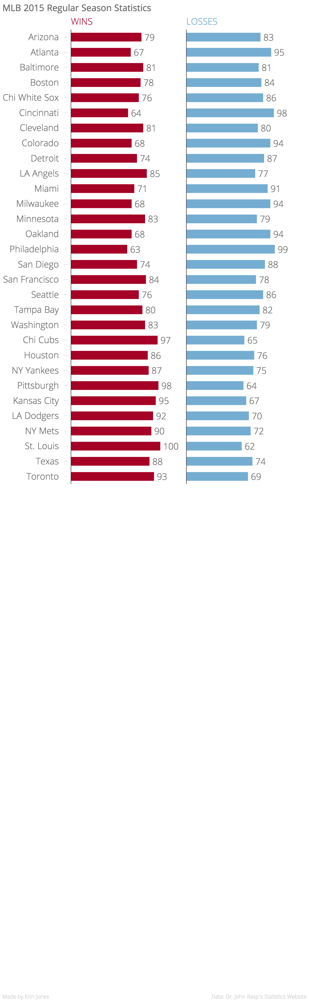
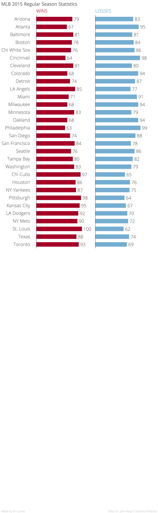

Erin Danielle Jones's Github Data

For the pie chart above, I used the majority of the same data fields from the map above : Race, Sum of Records, State, City (I removed longitude and latitude.) I really think the pie chart, as well as other charts I went through, fall short in showing the data like the map chart.
I definitely do not think it shows the data in a way that is easy to read and I believe the map in this instance is a much better option overall. The pie chart only shows the amount of people killed in police-involved killings by race, but it does not show the state, city, or any other variables unless you scroll through it. This not only makes it confusing to decipher what the data even means, it makes it hard to read the data. The map chart, however, shows the cities and states where the killings occurred, as well as the race of those killed and the number of those killed in each area. The Other and the Arab-American races are so small, you can barely see them on the pie chart. Meanwhile, you can select them specifically on the map.
In another instance, I would most likely exclusively use the pie chart if the only field I wanted to show was race, but even then it does not show the spectrum well in comparison to other chart types. In the end, the pie chart does not come close to matching up with the map at all. I believe using the map was the best choice in this instance.
Class 1
Charts


 

Class 2
In-Class Assignment


Homework

Class 3
Class 4
Class 5
Class 6